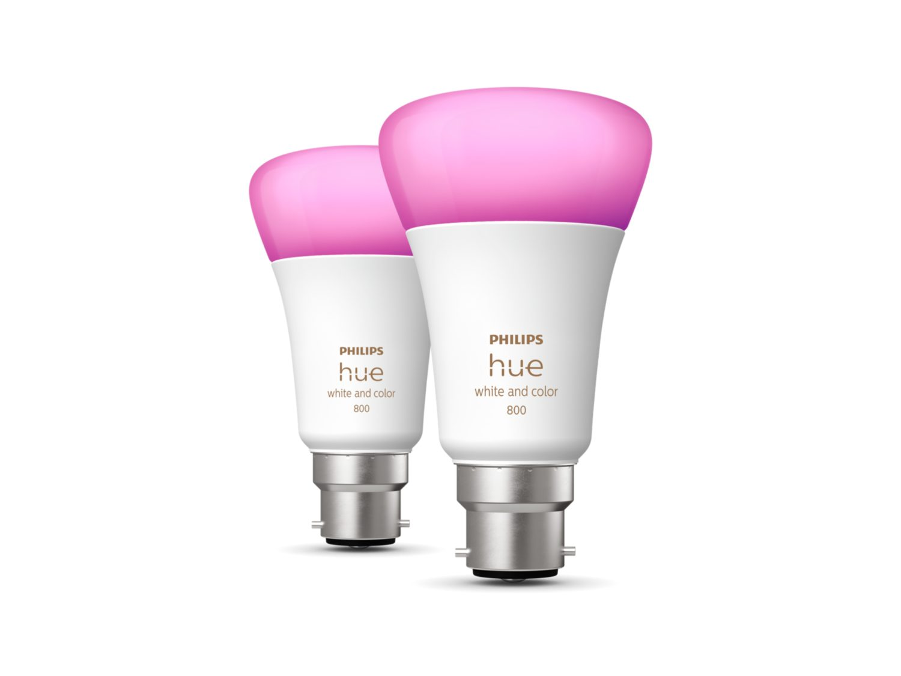

Home Security
Home Automation can make it apear that you are at home when you are not. This makes it apear to people that want to break in that you are at home, which would stop them.
Home Automation has also made it very easy for people to impliment CCTV camaras this also means that robbers are likly to get court.
Indigo a Home Automation Software
Indigo is an easy to use very adabtible software which lets you write your own plug ins to control diffrent divises. You can also link in things like rasbery pis.
See More Here...  Click here to view productIncreased energy efficiency
Home automation makes sure that lights are turned of after they are not needed to be on. This takes the human error out of the situation, incase people forget to turn lights off.
Home automation can also help save energy required to heat an area. It can do this by working out people are in the building and working out what rooms then need Heating.

Example of what home automation can do... Click here